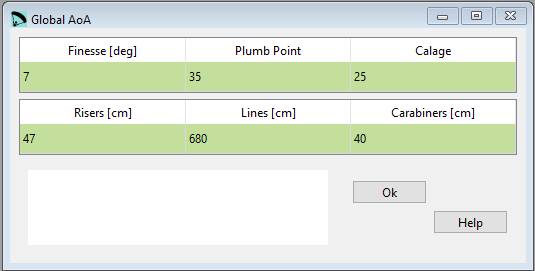
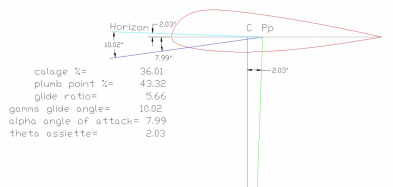

Estimating general Angle of Attack¶
This window defines the basic length of the lines and provides the general draft of the wing, estimating the center of pressure and angle of glide.
{kind=link}
Raw data:
************************************************************
* 8. Global angle of attack estimation *
*************************************************************
* Finesse GR
7.5
* Plumb point estimation %
40
* Calage %
31
* Risers lenght cm
47
* Line lenght cm
680
* Karabiners cm
40
Finesse¶
Finesse goal, according to the general proportions of the wing.
Plumb point¶
The point on the central chord, located just at the same vertical of the pilot in % of central cord.
Calage¶
Calage in% (distance from the leading edge point to the perpendicular to the central chord from the pilot position).
Risers¶
Riser basic length.
Lines¶
Basic length of lines (carabiners to sail).
Carabiners¶
Separation between main carabiners.

A more detailed description you can find here Laboratori d'envol website.